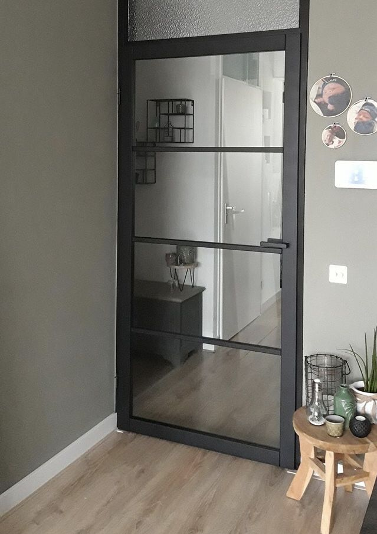

Ionisator - Wikipedia
Ionisator
Uit Wikipedia, de vrije encyclopedie Naar navigatie springen Naar zoeken springenEen ionisator of ionizer is een apparaat dat moleculen ioniseert , dat wil zeggen op deeltjes een elektrische lading aanbrengt.
Over het algemeen wordt met een ionisator een apparaat bedoeld dat bijvoorbeeld in huis gebruikt kan worden, en het aantal stofdeeltjes in de lucht vermindert. Het principe wordt ook gebruikt bij het reinigen van uitlaatgassen en het ontstoffen van lucht in lange tunnels , daar spreekt men meestal van een elektrostatische precipitator .
Werking [ bewerken | brontekst bewerken ]
Een van de manieren om de lucht te ioniseren is om het apparaat elektronen de lucht in te laten 'sproeien' door een hoogspanning op een naald te zetten. De elektronen hechten zich aan zuurstofmoleculen. Over wat daarna gebeurt zijn twee gangbare theorieën. Volgens de ene theorie hechten de geladen zuurstofmoleculen zich aan stofdeeltjes in de lucht, waarna deze in de omgeving neerslaan doordat ze een elektrische lading hebben. Volgens de andere theorie zijn schadelijke stofdeeltjes positief geladen wat geneutraliseerd wordt door het negatief geladen zuurstofmolecuul.
Om het de elektronen makkelijk te maken om in de lucht te komen, wordt meestal een naald gebruikt. Vanaf de uiterste punt van de naald springen de elektronen het gemakkelijkst af. Hiervoor wordt een elektrische potentiaal van een paar kilovolt op de naald gezet. Doordat de stroomsterkte en daarmee het vermogen zeer laag is, is het overigens niet gevaarlijk om deze naald aan te raken.
Over de hoeveelheid stof die zo'n apparaat uit de lucht haalt, bestaan verschillende meningen. Het hangt ook sterk af van andere factoren, zoals ventilatie. Verder is het niet bekend of en in welke mate vermindering van het aantal stofdeeltjes een positief effect op de gezondheid heeft en of dit voor iedereen zou gelden of alleen voor mensen met bepaalde allergieën .
Voordelen [ bewerken | brontekst bewerken ]
Uitgebreide onderzoeken tonen dat blootstelling aan negatieve of positieve luchtionen geen noemenswaardige rol lijkt te spelen bij de ademhalingsfunctie. [1]
Nadelen [ bewerken | brontekst bewerken ]
De hoeveelheid elektronen kan voldoende zijn om zuurstofmoleculen (O 2 ) uit elkaar te trekken. De twee losse zuurstofatomen kunnen dan elk met een ander zuurstofmolecuul ozon (O 3 ) vormen. Door de hoogspanning niet al te hoog te maken wordt dit grotendeels voorkomen. Er zijn de laatste jaren verscheidene modellen op de markt gekomen die compleet ozonvrij zijn.
Inademen van negatief geladen lucht (die een geringe hoeveelheid ozon bevat) is op zichzelf niet schadelijk. Wel staat vast dat ozon een giftige stof is en in hogere concentraties een steriliserende werking heeft. Als vuistregel geldt dat ozon schadelijk is wanneer de concentratie zo groot is dat de kenmerkende ozongeur wordt waargenomen.
Het probleem van de meeste luchtreinigers op basis van ionisatie is dat ze dermate veel ozon produceren om bacteriën en virussen te doden dat deze hoeveelheid ook direct schadelijk is voor de gezondheid. Ozon is een toxische verbinding. Het is ongezond om langdurig ozon in te ademen, ook in lage concentraties. Als een ionisator weinig ozon produceert zal het ook weinig effect hebben op het onschadelijk maken van bacteriën en virussen.
Het stof dat in de omgeving van het apparaat neerslaat kan niet zomaar opgezogen of weggeveegd worden. Blijkbaar hechten de geladen stofdeeltjes zich heel sterk. Daarom is een vochtige doek nodig om het weg te vegen. De vochtige doek ontlaadt het geïoniseerde stof.
Bronnen, noten en/of referenties ↑ Dominik D Alexander e.a. (2013) Air ions and respiratory function outcomes: a comprehensive review in Journal of negative results in biomedicine Overgenomen van " https://nl.wikipedia.org/w/index.php?title=Ionisator&oldid=57851972 " Categorie : Huishoudelijke apparatuurNavigatiemenu
Persoonlijke hulpmiddelen
Niet aangemeld Overleg Bijdragen Registreren AanmeldenNaamruimten
Artikel OverlegVarianten
Weergaven
Lezen Bewerken Brontekst bewerken GeschiedenisMeer
Zoeken
Navigatie
Hoofdpagina Vind een artikel Vandaag Etalage Categorieën Recente wijzigingen Nieuwe artikelen Willekeurige paginaInformatie
Gebruikersportaal Snelcursus Hulp en contact DonatiesHulpmiddelen
Links naar deze pagina Verwante wijzigingen Bestand uploaden Speciale pagina's Permanente koppeling Paginagegevens Deze pagina citeren Wikidata-itemAfdrukken/exporteren
Boek maken Downloaden als PDF Printvriendelijke versieIn andere projecten
Wikimedia CommonsIn andere talen
العربية Deutsch English Español Euskara فارسی Gaeilge Magyar Հայերեն Italiano Қазақша Polski Русский Svenska Українська Koppelingen bewerken Deze pagina is voor het laatst bewerkt op 29 dec 2020 om 12:32. De tekst is beschikbaar onder de licentie Creative Commons Naamsvermelding/Gelijk delen , er kunnen aanvullende voorwaarden van toepassing zijn. Zie de gebruiksvoorwaarden voor meer informatie.Wikipedia® is een geregistreerd handelsmerk van de Wikimedia Foundation, Inc. , een organisatie zonder winstoogmerk. Privacybeleid Over Wikipedia Voorbehoud Mobiele weergave Ontwikkelaars Statistieken Cookiesverklaring